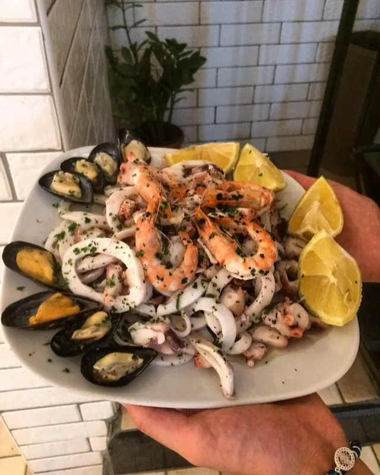
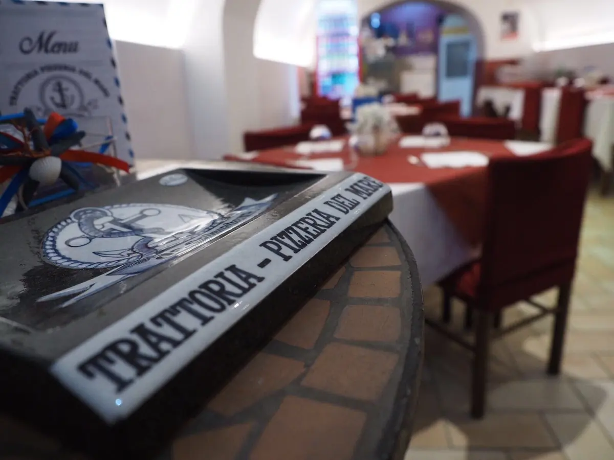

Gamberi, calamari, cozze e limone.

Trattoria di pesce e pizzeria · Castellammare di Stabia
DelMareda Salvatore
Trattoria di pesce e pizzeria a Castellammare di Stabia, in Via Giuseppe Bonito, 199.
4,5702 recensioni GoogleVia Giuseppe Bonito, 199, 80053 Castellammare di Stabia, NA

La sala con le tovaglie rosse.
Via Giuseppe Bonito, 199, Castellammare di Stabia. 4,5 su 5 su Google, 702 recensioni.
Recensioni
Cosa dicono i clienti
4,5 su 5 · 702 recensioni su Google. Qui sotto alcune, riportate senza modifiche (i nomi sono abbreviati).
★★★★★
Eccellente sotto ogni punto di vista!
Siamo stati all'Osteria Pizzeria Da Salvatore e siamo rimasti entusiasti: tutto è stato semplicemente buonissimo! La cucina è davvero ai massimi livelli, e la qualità si vede soprattutto nella cura dei dettagli e delle piccole cose persino le patatine erano eccezionali!
La marcia in più è stata l'attenzione al cliente: ci hanno regalato delle pittule, una vera e propria coccola che dimostra la grandissima ospitalità del ristorante. Ci siamo sentiti super viziati.
Torneremo sicuramente, straconsigliato!
★★★★★
Oggi abbiamo pranzato in questo ristorante e peccato che non ci siano altre stelle da dare perché le meriterebbero tutte.
Pesce fresco ben cucinato, cortesia, porzioni abbondanti ed ottimo rapporto qualità prezzo.
Non essendo mai stati in questo posto e non conoscendo le porzioni avevamo ordinato un antipasto in più che il proprietario ci ha fatto togliere dall’ordine perché già sapeva che era troppo e non l’avremmo mangiato, grande segno di serietà e professionalità.
Sicuramente ci torneremo spesso…
Consigliato!!!
★★★★
Ci siamo trovati in zona a Castellammare e abbiamo deciso di fermarci qui a cenare .
Abbiamo mangiato al piano di sopra ,sala tranquilla con pochi tavoli , ci siamo rilassati .
All interno della sala vi è un piccolo balcone che affaccia sulla strada offrendo quindi anche la possibilità di fumare .
Servizio un po' deludente ,la ragazza molto distratta con poca conoscenza nel settore.
Abbiamo dovuto chiedere noi il pane ,le posate per mangiare il primo , inoltre siamo stati i primi ad ordinare e siamo stati serviti per ultimi (aspettavamo un antipasto di due bruschette,niente di che ).
Abbiamo preso 4 bruschette pagate 4 euro e devo dire davvero buone ,due primi ,gnocchi alla sorrentina discreti e spaghetti con vongole e datterini buoni,due fritture di calamari molto misere ma buone ,pagate 13 euro l una, ci aspettavamo qualcosina in più, e una bottiglia di vino bianco PASSIONE ,BUONO leggermente frizzantino pagata 5 euro .
Che dire ,abbiamo speso 60 euro ,il prezzo mi sembra anche onesto, ma la quantità all interno di ogni piatto servito era davvero molto misera .
Per pagare abbiamo dovuto aspettare 10 Min che arrivasse qualcuno alla cassa e noi dovevamo scappare perché avevamo il ticket pagato sull auto fino ad una certa ora 🥴🥴.
Tutto sommato è stata un esperienza non del tutto negativa ,grazie ugualmente.
Spero che la recensione venga letta in modo positivo per migliorare le pecche del servizio offerto e non come offesa o per giudizio ,perché è per tale che l ho scritta .
Un saluto !!
★★★★★
Locale tipico suo lungomare di Castellammare.
Personale cordialissimo, il ragazzo è stato gentile e disponibile.
Abbiamo mangiato solo a base di pesce, prendendo antipasti misti e primi. Vino, acqua, dolce e amaro.
Come antipasti abbiamo mangiato zeppoline d'alga (gustose e ben fritte), alici marinate, polpo alla luciana su fresella di castellammare, insalata mista di mare (cozze, gamberi e calamari) e fritto di pesce con alici impanate ripiene di mozzarella, gamberi e baby calamari. Tutto davvero ottimo.
Come primi abbiamo preso paccheri con vongole e funghi porcini, davvero ottimi, buonissimi! Pantacce ceci e gamberetti anche queste molto buine, i gamberetti erano saporitisdimi e infine scialatielli ai frutti di mare, l'unico piatto che ho preferito meno, perché nonostante i frutti di mare fossero freschi e si sentisse proprio il sapore di mare, il tutto era un po' troppo sapido. Colpa delle cozze probabilmente che tendono a trattenere un po' di sale.
Tre bottiglie di falanghina, tre o quattro d'acqua, 3 limoncelli, una grappa e un amaro. Tre fette di dolce (una sbrisolona con confettura si frutti rossi). Per un totale di 215€ (eravamo in 8) il prezzo ci sta tutto. 26€ a testa è un prezzo più che onesto data la qualità e le porzioni abbondanti.
Ci torneremo sicuramente!
Orari e dove siamo
Vieni a trovarci
| Lunedì | 12:15–15:30 · 18:30–23:00 |
|---|---|
| Martedì | Chiuso |
| Mercoledì | 12:30–15:30 · 18:30–23:00 |
| Giovedì | 12:15–15:30 · 19:30–23:00 |
| Venerdì | 12:15–15:30 · 19:30–23:00 |
| Sabato | 12:15–23:30 |
| Domenica | 12:15–23:00 |
Trattoria Pizzeria del Mare da Salvatore
Via Giuseppe Bonito, 199, 80053 Castellammare di Stabia, NA
081 8704 973
Orari della scheda Google: nei festivi possono cambiare, chiamateci per conferma.
Via Giuseppe Bonito, 199, 80053 Castellammare di Stabia, NA
Contatti
Scrivici
Un messaggio su WhatsApp, o una telefonata: vi risponde Del Mare da Salvatore.